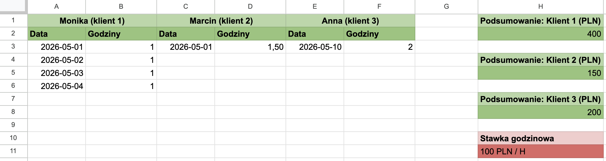
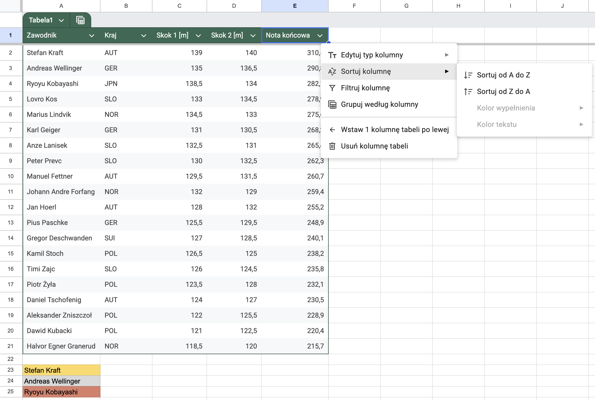
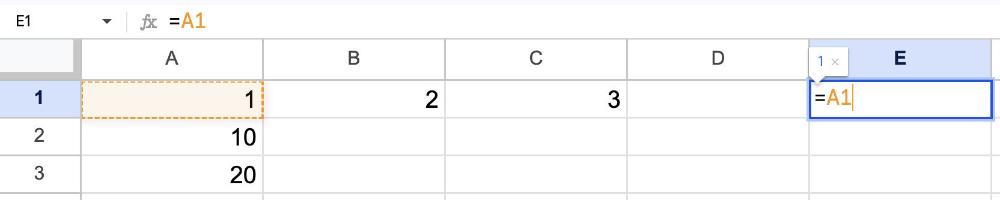
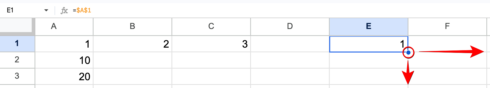
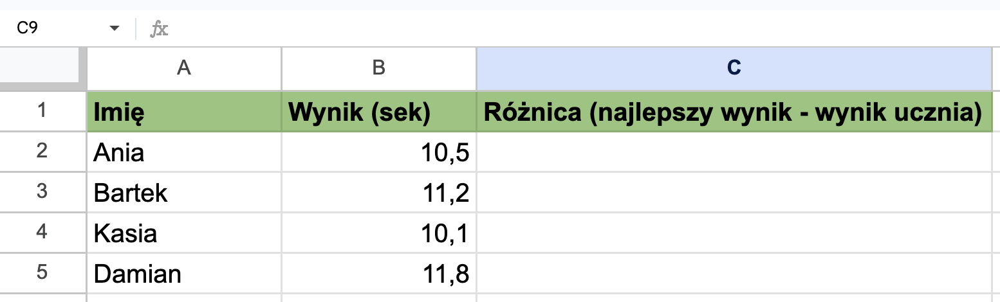
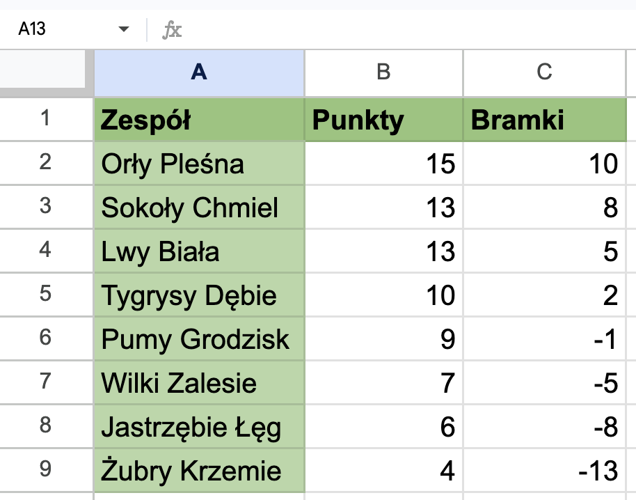

Laboratorium 4: Google Sheets.
Praca nauczyciela WF, trenera czy organizatora zawodów to nie tylko bezpośredni kontakt z zawodnikami, ale też mnóstwo "papierkowej" roboty. Google Sheets to Twój osobisty, wirtualny asystent, który automatycznie przeliczy stawki za treningi personalne, błyskawicznie wskaże najszybszego sprintera w klasie i wyłoni zwycięzców turnieju piłkarskiego. Narzędzia informatyczne oszczędzają Twój czas, pozwalając Ci skupić się na tym, co najważniejsze – na sporcie.
Dowiesz się, jak zautomatyzować codzienną pracę trenera i organizatora zawodów. Nauczysz się blokować komórki w formułach (adresacja bezwzględna). Przećwiczysz sortowanie i filtrowanie list zawodników. Zbudujesz powiązane ze sobą arkusze wyników.
Jako trener personalny, musisz sprawnie zarządzać rozliczeniami ze swoimi podopiecznymi. Obecnie prowadzisz 3 stałych klientów, z których każdy trenuje w innym trybie: jeden codziennie, drugi raz w tygodniu, a trzeci wpada na salę sporadycznie.
Przygotuj arkusz w taki sposób, aby każdy klient posiadał swoją własną sekcję składającą się z dwóch kolumn: daty treningu oraz liczby przepracowanych godzin. W efekcie Twój arkusz będzie posiadał 6 kolumn z danymi (np. kolumna A – data, kolumna B – godziny dla pierwszego klienta, kolumna C – data, kolumna D – godziny dla drugiego klienta itd.).
W pracy trenera lista danych ciągle rośnie. Zamiast co chwilę poprawiać formuły (np. zmieniać SUMA(A2:A10) na SUMA(A2:A100)), Google Sheets pozwala na stosowanie tzw. zakresów otwartych. Zapis A2:A (bez cyfry na końcu) oznacza: "weź wszystko od drugiego wiersza aż do samego dołu arkusza".
Przygotuj trzy oddzielne podsumowania kosztów (po jednym dla każdego klienta). Wykorzystaj mechanizm zakresów otwartych (np. =SUMA(B3:B) * 100), aby Twoje formuły automatycznie doliczały każdą nową sesję wpisaną do arkusza w przyszłości. Pozwoli Ci to na prowadzenie rozliczeń "w nieskończoność" bez żadnych poprawek w strukturze pliku.
Oto przykładowy rezultat. Pamiętaj, że wprowadzenie nowych danych powinno automatycznie aktualizować podsumowania.

Podczas zawodów w skokach narciarskich gromadzisz dziesiątki pomiarów. Przeanalizowanie ich "na oko" i ręczne szukanie lidera bywa uciążliwe i sprzyja pomyłkom. Twoim zadaniem jest przepisanie poniższych danych do arkusza. Zrób to dokładnie w takiej kolejności, w jakiej są podane (dane są celowo nieposortowane).
Zawodnik;Kraj;Skok 1 [m];Skok 2 [m];Nota końcowa
Ryoyu Kobayashi;JPN;138,5;134,0;282,1
Stefan Kraft;AUT;139,0;140,0;310,5
Anze Lanisek;SLO;132,5;131,0;265,4
Andreas Wellinger;GER;135,0;136,5;290,8
Jan Hoerl;AUT;128,0;132,0;255,2
Pius Paschke;GER;125,5;129,5;248,9
Karl Geiger;GER;131,0;130,5;268,2
Marius Lindvik;NOR;134,5;133,0;275,6
Gregor Deschwanden;SUI;127,0;128,5;240,1
Peter Prevc;SLO;130,0;132,5;262,3
Timi Zajc;SLO;126,0;124,5;235,8
Lovro Kos;SLO;133,0;134,5;278,9
Johann Andre Forfang;NOR;132,0;129,0;259,4
Manuel Fettner;AUT;129,5;131,5;260,7
Daniel Tschofenig;AUT;124,0;127,0;230,5
Kamil Stoch;POL;126,5;125,0;238,2
Piotr Żyła;POL;123,5;128,0;232,1
Dawid Kubacki;POL;121,0;122,5;220,4
Halvor Egner Granerud;NOR;118,5;120,0;215,7
Aleksander Zniszczoł;POL;122,0;125,5;228,9Po wprowadzeniu wszystkich 20 wierszy, zamień te dane w profesjonalną bazę! Zaznacz obszar z wartościami i z górnego menu wybierz opcję Formatuj -> Przekonwertuj na tabelę.
Następnie wykorzystaj funkcję sortowania tabeli, aby uszeregować zawodników według noty końcowej (od największej do najmniejszej).
Podpowiedź: Aby to zrobić, kliknij małą ikonę strzałki (filtrowania) w nagłówku kolumny "Nota końcowa" i wybierz opcję Sortuj Z-A. Dzięki temu od razu zweryfikujesz wyniki i zobaczysz, kto stanął na podium. Na koniec, pod stworzoną tabelą, wypisz ręcznie imiona i nazwiska trzech najlepszych skoczków tych zawodów.
Oto przykładowy rezultat:

Na lekcji WF sprawdzasz czasy swoich uczniów w sprincie na 60 metrów. Chcesz szybko obliczyć i pokazać młodzieży, ile sekund stracili do najszybszego zawodnika. Aby zrobić to sprawnie, musisz zrozumieć mechanizm blokowania komórek, czyli różnicę między adresacją względną a bezwzględną.
Wyobraź sobie, że symbol dolara ($) to solidna kłódka. To, co stoi bezpośrednio po nim, zostaje
„zamrożone” i nie zmienia się podczas kopiowania formuły:
Eksperymenty przygotowawcze (wykonaj w nowym arkuszu):
Najpierw przygotuj prostą "mapę wartości", aby na własne oczy zobaczyć, co się dzieje. Wpisz:

Teraz przejdź do zupełnie innego, pustego miejsca arkusza, np. do komórki E1. Wpisz w niej prostą formułę: =A1. To polecenie mówi arkuszowi: "pobierz wartość z komórki A1". Naszym celem jest sprawdzenie, jak to odwołanie będzie się zachowywać, gdy zaczniemy kopiować (przeciągać) komórkę E1 w różne strony.

Przetestuj cztery rodzaje kłódek (dolarów). Za każdym razem wpisz odpowiednią formułę w komórkę E1 i przeciągnij ją o dwie komórki w prawo oraz o dwie w dół:
Wskazówka: Możesz szybko przełączać te tryby, naciskając klawisz F4 po zaznaczeniu adresu w formule.
Wprowadź poniższe wyniki do arkusza i stwórz formułę wyliczającą różnicę czasu. Pamiętaj o zablokowaniu komórki z czasem lidera za pomocą dolara. Dzięki temu Twoja formuła bezbłędnie przeliczy stratę dla każdego z uczniów, gdy przeciągniesz ją na dół tabeli!

Organizujesz osiedlowy turniej piłkarski Orlik Cup. W jednym arkuszu ("brudnopisie") prowadzisz pełny zapis wszystkich meczów grupowych i notujesz punkty na bieżąco. Jednak na wydruku dyplomów chcesz umieścić wyłącznie oficjalny, schludny ranking 3 najlepszych drużyn.
Nie kopiuj wyników ręcznie! Zamiast tego naucz się łączyć różne arkusze. Wystarczy podać nazwę arkusza
zrodłowego, dodać wykrzyknik i wskazać komórkę (np. Arkusz1!A1).
Twoje 1 zadanie: W pierwszej karcie arkusza przygotuj główną tabelę z punktacją grupową:

Twoje 2 zadanie: Utwórz nową, oddzielną kartę na dole (klikając ikonę "+") i w niej, za pomocą odwołań, dynamicznie "wyciągnij" tylko nazwy drużyn z miejsc na podium.
Potrafisz już nie tylko gromadzić wyniki sportowe, ale też błyskawicznie je przetwarzać.
Strona główna